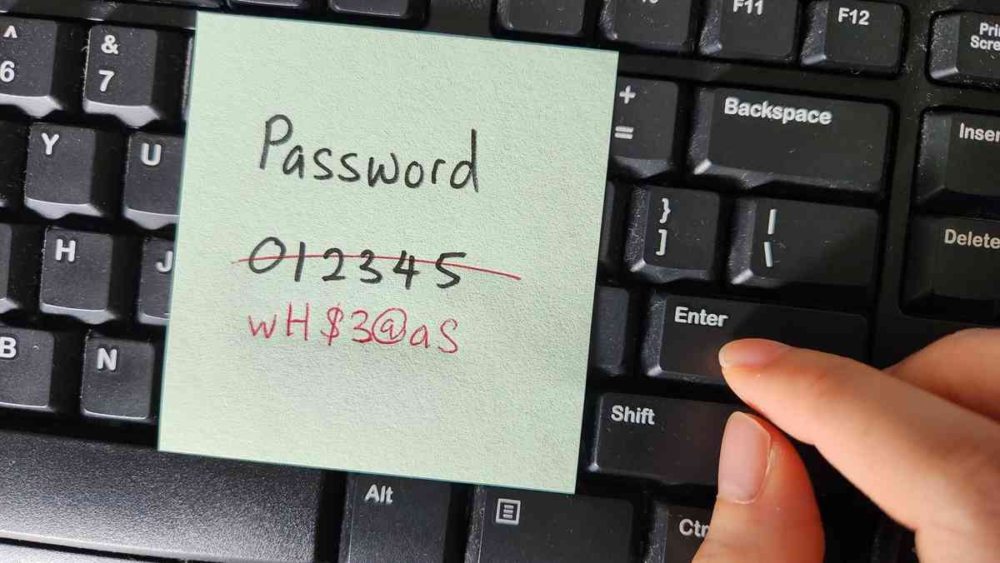

Zabezpečenie a spôsoby ochrany
Heslo
Mali by byť
dlhé
(ideálne 12+ znakov), kombinovať
malé a veľké písmená, číslice a špeciálne znaky
Nepoužívať rovnaké heslo
na viacerých stránkach/službách
Využívať
správcov hesiel
(napr. Bitwarden, KeePass)
Dvojfaktorová autentifikácia
– pridáva
dodatočnú vrstvu zabezpečenia,
napr. cez SMS alebo aplikáciu ako Google Authenticator

Šifrovanie
Symetrické šifrovanie – rovnaký kľúč
na šifrovanie aj dešifrovanie
Asymetrické šifrovanie – verejný a súkromný kľúč
, využívané v e-mailovej bezpečnosti a HTTPS
End-to-end šifrovanie
– zaručuje, že
dáta
môžu čítať len
odosielateľ a príjemca
(napr. v aplikáciách Signal, WhatsApp)
Šifrovanie
pevných diskov
a prenosných médií (USB)
Prístupové práva
Každý používateľ by mal mať len také
oprávnenia
, aké
nevyhnutne potrebuje
Vytváranie
rozhodovacích rolí
(admin, bežný používateľ, hosť atď.)
Ochrana citlivých informácií
pomocou ACL (Access Control List) alebo RBAC (Role-Based Access Control)
Ďaľšie spôsoby zabezpečenia.
Hlavná stránka